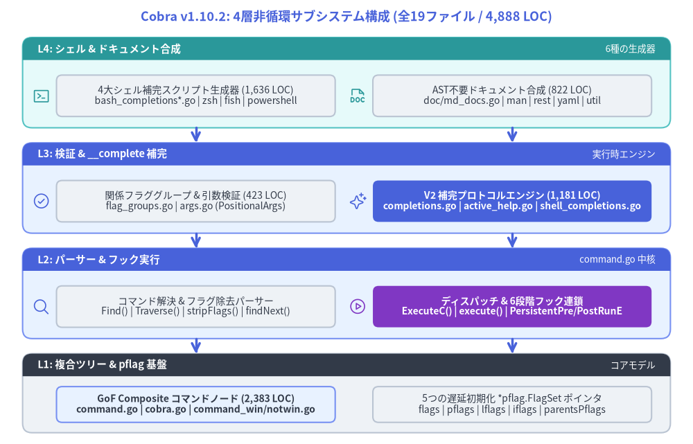
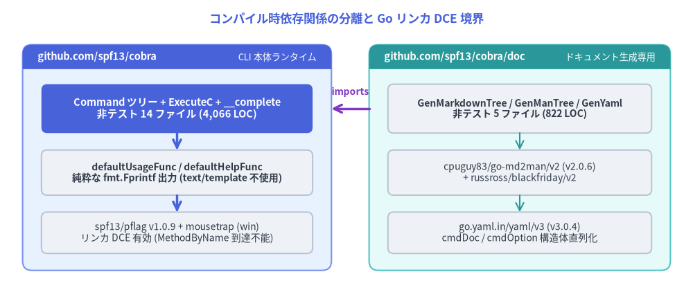

Cobra v1.10.2 内部アーキテクチャガイド
spf13/cobra v1.10.2 のソースコードレベル内部アーキテクチャ解説へようこそ。本ガイドでは、ルートパッケージ github.com/spf13/cobra およびサブパッケージ github.com/spf13/cobra/doc を構成する非テスト Go ソースファイル全 19 ファイル（計 4,888 LOC）を対象に、データ構造、フラグ解決の不変条件、ライフサイクルフック実行ループ、シェル補完プロトコルの状態機械をソースコードの行番号と対応付けて徹底解説します。

Source Code
from drawlib.canvas import save, setup
from drawlib.icons import phosphor
from drawlib.lines import line
from drawlib.shapes import rectangle
from drawlib.smartarts import Panel
from drawlib.styles import Styles
from drawlib.text import text
setup(width=184, height=118)
text(
(92, 113.5),
"Cobra v1.10.2: 4層非循環サブシステム構成 (全19ファイル / 4,888 LOC)",
style=Styles.PrimaryBold.patch(text_size=13.0),
)
# Layer 4 (Top): Synthesis & Shell Layer
Panel(
"L4: シェル & ドキュメント合成",
"6種の生成器",
style=Styles.SecondaryNeutral,
header_style=Styles.SecondaryFlat,
text_style=Styles.WhiteBold.patch(text_size=10.5),
description_style=Styles.White.patch(text_size=9.5),
header_height=6.0,
).draw((6, 84), width=172, height=24)
rectangle(
(52, 92.5),
width=74,
height=11,
style=Styles.Neutral.patch(shape_r=1.5),
text="4大シェル補完スクリプト生成器 (1,636 LOC)\nbash_completions*.go | zsh | fish | powershell",
text_style=Styles.Dark.patch(text_size=10.0),
)
phosphor.terminal_window((11, 92.5), width=4.8, style=Styles.Secondary)
rectangle(
(136, 92.5),
width=74,
height=11,
style=Styles.Neutral.patch(shape_r=1.5),
text="AST不要ドキュメント合成 (822 LOC)\ndoc/md_docs.go | man | rest | yaml | util",
text_style=Styles.Dark.patch(text_size=10.0),
)
phosphor.file_doc((95, 92.5), width=4.8, style=Styles.Secondary)
# Layer 3: Runtime Completion & Validation Layer
Panel(
"L3: 検証 & __complete 補完",
"実行時エンジン",
style=Styles.PrimaryNeutral,
header_style=Styles.PrimaryFlat,
text_style=Styles.WhiteBold.patch(text_size=10.5),
description_style=Styles.White.patch(text_size=9.5),
header_height=6.0,
).draw((6, 56), width=172, height=24)
rectangle(
(52, 64.5),
width=74,
height=11,
style=Styles.Neutral.patch(shape_r=1.5),
text="関係フラググループ & 引数検証 (423 LOC)\nflag_groups.go | args.go (PositionalArgs)",
text_style=Styles.Dark.patch(text_size=10.0),
)
phosphor.check_circle((11, 64.5), width=4.8, style=Styles.Primary)
rectangle(
(136, 64.5),
width=74,
height=11,
style=Styles.PrimaryFlat.patch(shape_r=1.5),
text="V2 補完プロトコルエンジン (1,181 LOC)\ncompletions.go | active_help.go | shell_completions.go",
text_style=Styles.WhiteBold.patch(text_size=10.0),
)
phosphor.sparkle((95, 64.5), width=4.8, style=Styles.Primary)
# Layer 2: Parser & Lifecycle Dispatch Engine
Panel(
"L2: パーサー & フック実行",
"command.go 中核",
style=Styles.PrimaryNeutral,
header_style=Styles.PrimaryFlat,
text_style=Styles.WhiteBold.patch(text_size=10.5),
description_style=Styles.White.patch(text_size=9.5),
header_height=6.0,
).draw((6, 28), width=172, height=24)
rectangle(
(52, 36.5),
width=74,
height=11,
style=Styles.Neutral.patch(shape_r=1.5),
text="コマンド解決 & フラグ除去パーサー\nFind() | Traverse() | stripFlags() | findNext()",
text_style=Styles.Dark.patch(text_size=10.0),
)
phosphor.magnifying_glass((11, 36.5), width=4.8, style=Styles.Primary)
rectangle(
(136, 36.5),
width=74,
height=11,
style=Styles.AccentFlat.patch(shape_r=1.5),
text="ディスパッチ & 6段階フック連鎖\nExecuteC() | execute() | PersistentPre/PostRunE",
text_style=Styles.WhiteBold.patch(text_size=10.0),
)
phosphor.play_circle((95, 36.5), width=4.8, style=Styles.Accent)
# Layer 1 (Bottom): Composite Tree & pflag Foundation
Panel(
"L1: 複合ツリー & pflag 基盤",
"コアモデル",
style=Styles.Neutral,
header_style=Styles.DarkFlat,
text_style=Styles.WhiteBold.patch(text_size=10.5),
description_style=Styles.White.patch(text_size=9.5),
header_height=6.0,
).draw((6, 3), width=172, height=21)
rectangle(
(52, 10.5),
width=74,
height=9.5,
style=Styles.PrimaryNeutral.patch(shape_r=1.5),
text="GoF Composite コマンドノード (2,383 LOC)\ncommand.go | cobra.go | command_win/notwin.go",
text_style=Styles.DarkBold.patch(text_size=10.0),
)
rectangle(
(136, 10.5),
width=74,
height=9.5,
style=Styles.Neutral.patch(shape_r=1.5),
text="5つの遅延初期化 *pflag.FlagSet ポインタ\nflags | pflags | lflags | iflags | parentsPflags",
text_style=Styles.Dark.patch(text_size=10.0),
)
line((52, 84), (52, 80), arrow_head="->", style=Styles.PrimaryBold)
line((136, 84), (136, 80), arrow_head="->", style=Styles.PrimaryBold)
line((52, 56), (52, 52), arrow_head="->", style=Styles.PrimaryBold)
line((136, 56), (136, 52), arrow_head="->", style=Styles.PrimaryBold)
line((52, 28), (52, 24), arrow_head="->", style=Styles.PrimaryBold)
line((136, 28), (136, 24), arrow_head="->", style=Styles.PrimaryBold)
save()
1. なぜ cobra と cobra/doc でパッケージを分離しているのか
Cobra v1.10.2 は単一の Go モジュール (module github.com/spf13/cobra) 内で意図的に 2つのパッケージ に分割されています。
github.com/spf13/cobra（ルートパッケージ — 非テスト14ファイル、4,066 LOC）:- 最小限のランタイム依存: 外部依存は POSIX/GNU フラグパーサーである
github.com/spf13/pflag v1.0.9と、Windows エクスプローラー起動検知用のgithub.com/inconshreveable/mousetrap v1.1.0（command_win.goの//go:build windowsビルド制約下のみ）の2つのみです。 - Go リンカのデッドコード除去（DCE）の保護: デフォルトの Usage / Help / Version 出力（
command.go:1974–2072のdefaultUsageFunc,defaultHelpFunc,defaultVersionFunc）はtext/templateを使わず、fmt.Fprintfで直接フォーマットします。ユーザーがSetUsageTemplate等でカスタムテンプレートを明示登録しない限り、cobra.go:179のtmpl()は到達不能となり、Go リンカはreflect.Value.MethodByNameをバイナリから完全に排除できます（cobra_test.go:245–301のTestDeadcodeEliminationで検証）。
- 最小限のランタイム依存: 外部依存は POSIX/GNU フラグパーサーである
github.com/spf13/cobra/doc（ドキュメント生成サブパッケージ — 非テスト5ファイル、822 LOC）:- 外部シリアライザ依存の隔離: Man ページ（roff）変換用の
github.com/cpuguy83/go-md2man/v2 v2.0.6（およびrussross/blackfriday/v2）と、YAML 構造化出力用のgo.yaml.in/yaml/v3 v3.0.4をこのサブパッケージに閉じ込めています。 - 通常の CLI バイナリは
github.com/spf13/cobraのみをインポートするため、Markdown パーサーや YAML シリアライザが本番バイナリにリンクされることはありません。
- 外部シリアライザ依存の隔離: Man ページ（roff）変換用の

Source Code
from drawlib.canvas import save, setup
from drawlib.lines import line
from drawlib.shapes import rectangle
from drawlib.smartarts import Panel
from drawlib.styles import Styles
from drawlib.text import text
setup(width=184, height=82)
text(
(92, 77),
"コンパイル時依存関係の分離と Go リンカ DCE 境界",
style=Styles.PrimaryBold.patch(text_size=12.5),
)
# Left Panel: Core Runtime Binary
Panel(
"github.com/spf13/cobra",
"CLI 本体ランタイム",
style=Styles.PrimaryNeutral,
header_style=Styles.PrimaryFlat,
text_style=Styles.WhiteBold.patch(text_size=10.5),
description_style=Styles.White.patch(text_size=9.5),
header_height=6.5,
).draw((6, 10), width=82, height=60)
rectangle(
(47, 53),
width=72,
height=13,
style=Styles.PrimaryFlat.patch(shape_r=1.5),
text="Command ツリー + ExecuteC + __complete\n非テスト 14 ファイル (4,066 LOC)",
text_style=Styles.WhiteBold.patch(text_size=10.5),
)
rectangle(
(47, 36),
width=72,
height=12,
style=Styles.Neutral.patch(shape_r=1.5),
text="defaultUsageFunc / defaultHelpFunc\n純粋な fmt.Fprintf 出力 (text/template 不使用)",
text_style=Styles.DarkBold.patch(text_size=10.0),
)
rectangle(
(47, 20),
width=72,
height=11,
style=Styles.Neutral.patch(shape_r=1.5),
text="spf13/pflag v1.0.9 + mousetrap (win)\nリンカ DCE 有効 (MethodByName 到達不能)",
text_style=Styles.Dark.patch(text_size=10.0),
)
line((47, 46.5), (47, 42), arrow_head="->", style=Styles.PrimaryBold)
line((47, 30), (47, 25.5), arrow_head="->", style=Styles.PrimaryBold)
# Right Panel: Offline Doc Generator Subpackage
Panel(
"github.com/spf13/cobra/doc",
"ドキュメント生成専用",
style=Styles.SecondaryNeutral,
header_style=Styles.SecondaryFlat,
text_style=Styles.WhiteBold.patch(text_size=10.5),
description_style=Styles.White.patch(text_size=9.5),
header_height=6.5,
).draw((98, 10), width=80, height=60)
rectangle(
(138, 53),
width=70,
height=13,
style=Styles.Neutral.patch(shape_r=1.5),
text="GenMarkdownTree / GenManTree / GenYaml\n非テスト 5 ファイル (822 LOC)",
text_style=Styles.DarkBold.patch(text_size=10.0),
)
rectangle(
(138, 36),
width=70,
height=12,
style=Styles.Neutral.patch(shape_r=1.5),
text="cpuguy83/go-md2man/v2 (v2.0.6)\n+ russross/blackfriday/v2",
text_style=Styles.Dark.patch(text_size=10.0),
)
rectangle(
(138, 20),
width=70,
height=11,
style=Styles.Neutral.patch(shape_r=1.5),
text="go.yaml.in/yaml/v3 (v3.0.4)\ncmdDoc / cmdOption 構造体直列化",
text_style=Styles.Dark.patch(text_size=10.0),
)
line((138, 46.5), (138, 42), arrow_head="->", style=Styles.Secondary)
line((138, 30), (138, 25.5), arrow_head="->", style=Styles.Secondary)
# Cross-package arrow: doc imports cobra
line((98, 53), (88, 53), arrow_head="->", style=Styles.AccentBold)
text((93, 57.5), "imports", style=Styles.AccentBold.patch(text_size=10.0))
save()
2. ソースファイル一覧（非テスト 19 ファイル、計 4,888 LOC）
本ガイドで解説する各サブシステムと、Cobra v1.10.2 リポジトリ内のソースファイルの対応関係は以下の通りです。
| レイヤー | サブシステム | 対象ソースファイル (spf13/cobra v1.10.2) |
非テスト LOC | 主要な内部シンボル・関数 |
|---|---|---|---|---|
| L1 | 複合ツリー & FlagSet トポロジ |
command.go, cobra.go, command_win.go, command_notwin.go |
2,383 |
Command, AddCommand, mergePersistentFlags, updateParentsPflags, tmpl, defaultUsageFunc |
| L2 | パーサー & コマンド解決 | command.go (L654–L897) |
(command.go 内) |
Find, Traverse, stripFlags, argsMinusFirstX, findNext, hasNoOptDefVal, ld |
| L2 | ライフサイクル実行エンジン | command.go (L905–L1314) |
(command.go 内) |
ExecuteContextC, ExecuteC, execute, preRun, postRun, checkCommandGroups |
| L3 | 関係フラググループ & 引数検証 | flag_groups.go (291), args.go (132) |
423 |
ValidateFlagGroups, processFlagForGroupAnnotation, enforceFlagGroupsForCompletion, MatchAll, legacyArgs |
| L3 | Completion V2 実行時エンジン | completions.go (1,021), active_help.go (61), shell_completions.go (99) |
1,181 |
initCompleteCmd, getCompletions, checkIfFlagCompletion, ShellCompDirective, AppendActiveHelp |
| L4 | 4大シェルスクリプト生成器 | bash_completionsV2.go (485), bash_completions.go (649), zsh_completions.go (309), fish_completions.go (293), powershell_completions.go (351) |
2,087 (旧 v1 含む) |
genBashComp, genZshComp, genFishComp, genPowerShellComp |
| L4 | AST不要ドキュメント合成 | doc/md_docs.go (159), doc/man_docs.go (247), doc/rest_docs.go (187), doc/yaml_docs.go (176), doc/util.go (53) |
822 |
GenMarkdownCustom, GenMan, GenReSTCustom, GenYamlCustom, hasSeeAlso, byName |
3. 内部アーキテクチャ詳細チャプター（全6章）
以下のリンクから各サブシステムの内部設計と実装詳細へ直接移動できます。
| 章 | アーキテクチャ主題 | 解説対象の主要ファイル |
|---|---|---|
| 1. Command ツリーと FlagSet 遅延初期化 | GoF Composite パターン (parent, commands)、パディング長キャッシュ、5つの遅延初期化 *pflag.FlagSet (flags, pflags, lflags, iflags, parentsPflags)、mergePersistentFlags()、および Go リンカのデッドコード除去 (TestDeadcodeElimination)。 |
command.go, cobra.go, cobra_test.go |
| 2. Find / Traverse と stripFlags パーサー | Find と Traverse の解決セマンティクス比較、ステートレスな stripFlags() トークンスキャナ、NoOptDefVal による短・長フラグ値スキップ判定、argsMinusFirstX、findNext() のサブコマンド照合順序。 |
command.go:654–881 |
| 3. ExecuteC・execute() とフック連鎖 | ExecuteContextC -> ExecuteC の Root 再アンカー、Windows mousetrap、help/__complete/completion の動的注入、c.execute() の検証順序、および PersistentPreRunE〜PersistentPostRunE の6段階フックパイプライン (EnableTraverseRunHooks)。 |
command.go:905–1314, command_win.go |
| 4. Annotation フラググループとバリデータ | pflag.Flag.Annotations へのグループ制約格納、ValidateFlagGroups() の状態テーブル構築、enforceFlagGroupsForCompletion() による補完候補の動的制御、および PositionalArgs 関数コンビネータ (MatchAll, OnlyValidArgs)。 |
flag_groups.go, args.go |
| 5. __complete プロトコルとシェル生成 | 隠しコマンド __complete / __completeNoDesc の注入、getCompletions() 状態機械、checkIfFlagCompletion()、NArg() を用いた -- 境界検出、_activeHelp_ マーカー、:directive ビットマスク通信プロトコル、4シェルのスクリプト生成。 |
completions.go, active_help.go, *_completions*.go |
| 6. cobra/doc の再帰ツリー直列化 | AST 解析を行わないメモリ上 *cobra.Command ツリーの内省、後順（post-order）再帰 *TreeCustom 走査、hasSeeAlso と byName による相互リンク生成、go-md2man/v2 の roff パイプライン (SOURCE_DATE_EPOCH)、yaml/v3 の forceMultiLine 出力。 |
doc/md_docs.go, doc/man_docs.go, doc/rest_docs.go, doc/yaml_docs.go, doc/util.go |
4. 関連ドキュメントポータル
本 内部アーキテクチャガイド は、spf13/cobra v1.10.2 の4部構成ドキュメントスイートの第3ポータルです。
- Cobra ユーザーガイド (
https://cobra.drawlib.com/user_guide/): CLI 構築チュートリアル、サブコマンド設計、Viper とのフラグ連携、シェル補完の導入手順。 - Cobra API リファレンス (
https://cobra.drawlib.com/api/):cobraおよびcobra/docパッケージの全公開型・メソッド・関数・定数・変数の完全リファレンス。 - PNI501 診断レポート (
https://cobra.drawlib.com/pni501/): Cobra v1.10.2 の静的解析、テストカバレッジ分析、およびアーキテクチャ健全性レポート。